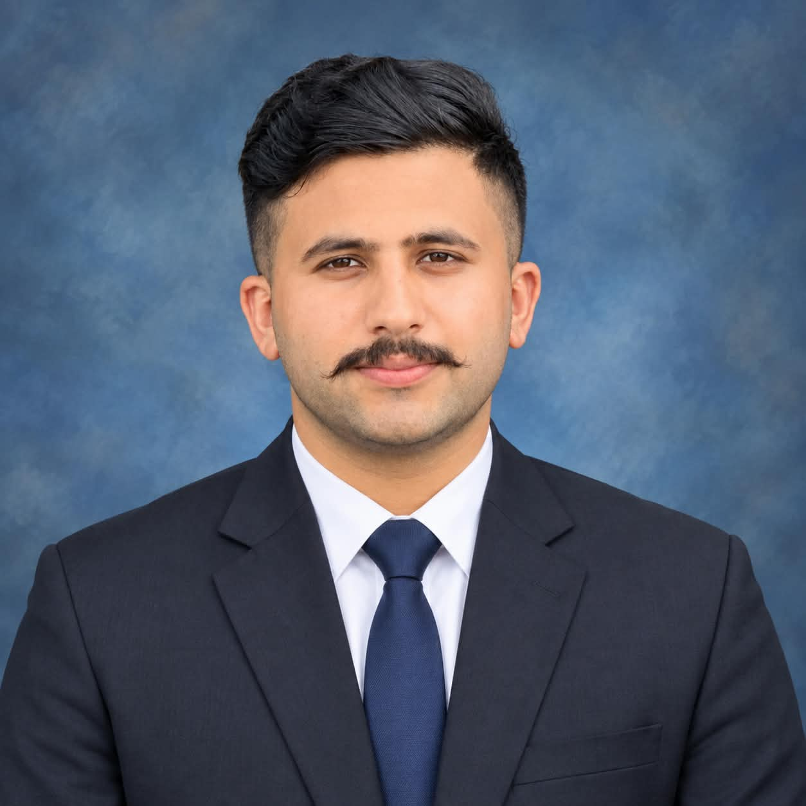

Name: Hamdani
Country: Pakistan
City: Islamabad
My educational journey has been one of steady growth, curiosity, and discovery. It began in a small primary school in my hometown, where I first learned the basics of reading, writing, and mathematics. Even at that young age, I was fascinated by how things worked. I would take apart small toys and try to put them back together, always asking questions about the world around me. My teachers noticed this curiosity and encouraged me to explore, which planted the seeds of a lifelong love of learning. Those early years taught me discipline and the importance of paying attention to detail, lessons that would later prove essential when I started studying programming.
In middle school, my interests expanded. I especially enjoyed mathematics and science, where problems had clear logical solutions. I remember one teacher in particular, my mathematics instructor, who had a unique way of making difficult concepts feel simple. Instead of just giving us formulas, he showed us why they worked. His approach changed the way I thought about learning. It was not about memorizing facts, but about understanding the reasoning behind them. This mindset later helped me enormously when I began studying programming, because programming is fundamentally about logical thinking and problem solving. Outside the classroom, I spent hours reading books, exploring science magazines, and experimenting with the family computer, which was my first real introduction to technology.
High school was a turning point. This was where I first encountered computer science as a formal subject. I learned the basics of how computers work, what algorithms are, and how simple programs are written. I was immediately drawn to it. There was something deeply satisfying about writing a few lines of code and watching the computer execute them exactly as instructed. I began to spend my free time watching online tutorials, reading programming blogs, and trying small projects on my own. My first real project was a simple calculator program. It was far from perfect, but seeing it work gave me a sense of accomplishment that I had never felt before. I also faced many challenges during this period. Debugging errors was frustrating, and there were moments when I wanted to give up. But each problem I solved taught me something new, and gradually I became more confident in my abilities.
When I entered university, I chose a course that combined my interests in technology and problem solving. The first semester introduced me to C programming, which was both challenging and rewarding. Learning about variables, loops, functions, arrays, and pointers gave me a much deeper understanding of how software actually works. I practiced extensively on platforms like HackerRank and SoloLearn, which helped me sharpen my skills and earn certificates that I am proud of. In the following semester, I studied web programming, where I learned HTML, CSS, and how to build and publish websites using GitHub Pages. Creating my own website from scratch was one of the most exciting experiences of my academic life. It showed me how the skills I had been learning could produce something real and useful.
Looking back, I realize that my education has been more than just a series of courses. It has shaped the way I think, taught me to be patient, and shown me the value of persistence. I have learned that failure is not the end. It is simply part of the learning process. Every bug I fixed, every concept I struggled with, and every project I completed has contributed to who I am today. Looking forward, I hope to continue learning and to deepen my knowledge in areas such as data structures, algorithms, and full stack web development. My long term goal is to become a skilled software developer who can build applications that make a positive difference in people's lives. I am grateful for the teachers, mentors, and opportunities that have guided me so far, and I am excited about what the future holds.
During this semester I learned HTML, CSS, and how to publish websites using GitHub Pages. I completed many exercises covering images, tables, forms, lists, and styling. Each exercise helped me understand how the structure and presentation of a web page work together.
Last semester I studied C programming. I practiced on HackerRank and SoloLearn, earning certificates and badges. I learned variables, loops, functions, arrays, and pointers. These foundations helped me understand how programs actually run.
In my free time I enjoy reading, coding small projects, and learning about new technologies. I also like watching tutorials on YouTube and experimenting with new tools.